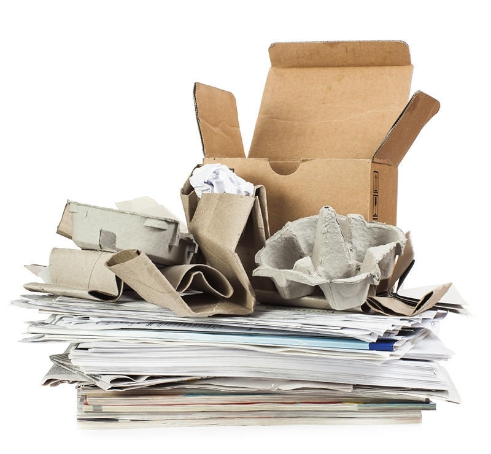

Descarte correto de residuos
Descarte e reciclagem do Papel
Reciclagem do Papel
A reciclagem de papel e papelão é uma prática essencial para preservar as florestas e reduzir a pressão sobre os recursos naturais. Ao reciclar papel, podemos economizar energia, água e evitar o desperdício de recursos valiosos. Além disso, ao manter o papel fora dos aterros sanitários, contribuímos para a redução da poluição do solo e da água, promovendo um ambiente mais limpo e saudável para as gerações futuras.
A importância da reciclagem do Papel
- Reduz o corte de árvores, preservando florestas.
- Reduz a demanda por água, já que o processo de reciclagem de papel consome menos água do que a produção a partir de celulose virgem.
- Diminui a quantidade de resíduos sólidos urbanos, aliviando a pressão sobre os sistemas de gestão de resíduos.
- Diminui a quantidade de resíduos em aterros sanitários.
- A pasta formada a partir da reciclagem de papel pode servir de matéria-prima para novos produtos e um dos mais comuns encontrados no mercado são as conhecidas embalagens de ovos, no tradicional modelo formas.
Como descartar Papel corretamente
Ao descartar papel e papelão, é importante separá-los dos outros materiais recicláveis e resíduos. Certifique-se de que estejam limpos e secos, pois a umidade pode dificultar o processo de reciclagem. Evite misturá-los com alimentos ou líquidos, pois isso pode contaminar o material. Você pode utilizar caixas de papelão para armazenar e transportar outros materiais recicláveis. Depois, basta colocá-los em contentores de reciclagem ou levá-los para um centro de reciclagem.